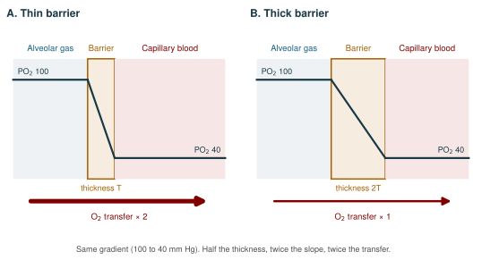
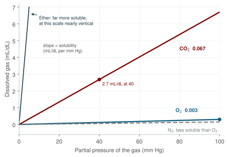
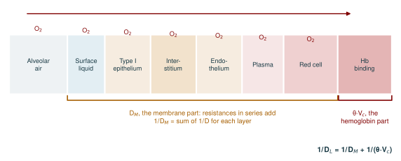
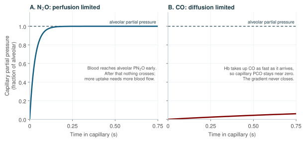
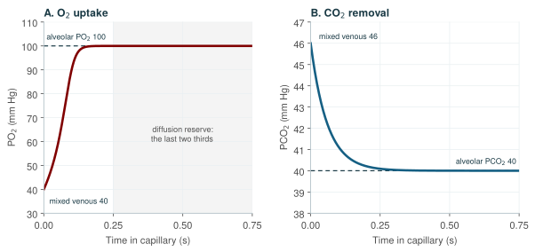
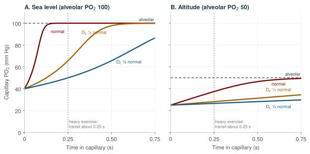

24 Diffusion
Getting O2 and CO2 across the blood-gas barrier
- Describe the structure of the blood-gas barrier and the pulmonary capillary bed, and say how each suits gas exchange.
- Apply Fick’s law to predict how area, thickness, gradient, solubility and molecular weight change gas transfer.
- Explain why CO2 diffuses about 20 times faster than O2.
- Explain why the diffusing capacity (DL) depends on the capillary blood (hemoglobin and capillary volume) as well as on the barrier.
- Distinguish perfusion-limited from diffusion-limited transfer, using N2O, CO and O2.
- Explain how a thick barrier, exercise and altitude make O2 transfer diffusion limited.
Names, dates and the exact values in figure captions are context, not things to memorize.
The Alveolar Ventilation chapter brought O2 from ambient air to the alveolus, where PAO2 is about 100 mm Hg. This chapter takes it across the blood-gas barrier into the pulmonary capillary blood, a distance of well under a micrometer that still takes a whole lecture. The next chapter (Transport of O2 and CO2) covers what hemoglobin does with the O2 once it arrives.
Diffusion is passive. No pump or transporter in the barrier moves O2 or CO2, and no energy is spent. Each gas moves only down its own partial pressure gradient. Keep one question from the last lecture in mind as you read: if alveolar and arterial PO2 are both about 100 mm Hg, where is the gradient that drives O2 into the blood?
24.1 A barrier built for exchange
It is thin. On an electron micrograph of a pulmonary capillary, the barrier has two sides. On the thin side, the alveolar epithelium and the capillary endothelium share one fused basement membrane, and the whole barrier is only 0.2 to 0.3 µm thick. Most gas exchange happens there. On the thick side there is more interstitium, with bundles of collagen between the epithelium and the endothelium. Edema fluid collects first on the thick side, which spares the thin side for a while (you met edema formation in Microcirculation).
It is large. The lung has several hundred million alveoli. Repeated branching into acini packs a surface of about 50 to 100 m2 into the chest, roughly half a singles tennis court.
The capillaries are a sheet, not tubes. In the systemic circulation, capillaries are usually drawn as separate tubes between an arteriole and a venule. In the alveolar wall the capillaries are so densely interconnected that blood flows as a sheet about one red cell thick, a little like a waffle fry, with flow in every direction through the side channels. The aggregate cross-sectional area is large, so resistance is low and blood moves slowly. At rest a red cell spends about 0.75 s in a pulmonary capillary, and at any moment only about 70 mL of blood is in the whole capillary bed, spread across that huge surface.
Small holes in the alveolar walls, the pores of Kohn, connect neighboring alveoli. They allow collateral ventilation, so an alveolus whose airway is blocked can still get some air from its neighbors. They are also one path by which bacteria and fluid spread from alveolus to alveolus in lobar pneumonia.
24.2 Fick’s law of diffusion
The rate at which a gas crosses a sheet of tissue (V̇gas) is proportional to the area of the sheet (A), to a diffusion constant for that gas in that tissue (D), and to the partial pressure difference across it (P1 − P2), and inversely proportional to the thickness (T):
\[\dot{V}_{gas} = \frac{A \cdot D}{T}\,(P_1 - P_2)\]
This has the same shape as Ohm’s law: flow equals a driving pressure divided by a resistance, with T/(A·D) playing the part of the resistance. The lung maximizes A and minimizes T. Figure 24.1 shows the thickness term at work: with the same gradient, a barrier half as thick has a profile twice as steep and moves twice as much O2.

24.2.1 The diffusing capacity, DL
In a patient you cannot measure the area or the thickness of the barrier. So for clinical work the area, thickness and diffusion constant are lumped into one number, the diffusing capacity of the lung (DL):
\[\dot{V}_{gas} = D_L\,(P_1 - P_2)\]
DL is a property of the lung and of the gas in question. It does not depend on the partial pressures. You calculate it from a measured transfer and a measured gradient, but if you double the gradient the transfer doubles and DL stays the same.
Now the question from the start of the chapter. If P1 is alveolar PO2 and P2 is arterial PO2, and both are 100, the equation seems to say no O2 moves. The gradient is along the capillary. Blood enters at a PO2 of about 40, so at the start of the capillary the gradient is about 60 mm Hg. It shrinks as the blood loads O2 and is close to zero a third of the way along. P2 is the capillary PO2, averaged along the capillary, not the arterial value.
Slide 8 writes Fick’s law for the lung as V̇gas = DL (PA − Pa), with arterial PO2 as P2. In a normal lung PA and Pa are about equal, so read P2 as capillary partial pressure averaged along the capillary, as the slide 8 notes explain. The course map writes DL (P1 − P2). Both give the same DL.
24.3 What sets D: solubility and molecular weight
The diffusion constant depends on the gas:
\[D \propto \frac{\text{solubility}}{\sqrt{\text{molecular weight}}}\]
A gas that dissolves well in the barrier crosses it faster, and a lighter molecule diffuses faster. The solubility that counts here is solubility in the barrier, which is mostly water. Physical solubility in water or plasma ranks the gases the same way, and Figure 24.2 shows those values.
Why CO2 diffuses about 20 times faster than O2. CO2 is about 24 times as soluble as O2. It is also heavier (molecular weight 44 against 32), which slows it a little: √(44/32) ≈ 1.17. So CO2 diffuses about 24 ÷ 1.17 ≈ 20 times faster. Molecular weight alone would favor O2; solubility outweighs it. In practice this means CO2 is almost never diffusion limited, and a high PaCO2 is not explained by a diffusion problem. A high PaCO2 means hypoventilation.

Two different solubilities matter in this lecture, and they are easy to run together.
- Solubility in the barrier is part of D. A gas that dissolves well in the membrane crosses it faster.
- Solubility or binding in the blood is not part of DL. It sets how fast the partial pressure in the capillary blood rises as the gas arrives. A gas that dissolves well in blood, or binds to something in it, can be taken up in large amounts while its blood partial pressure barely rises. The gradient stays large and the gas keeps moving, but it takes longer to reach equilibrium.
A gas that is soluble in the membrane but poorly soluble in blood equilibrates fastest. CO, which binds hemoglobin, is the extreme case and never equilibrates (later in this chapter).
Helium dissolves very poorly in blood, so almost none of it leaves the lung during a breath-hold or a rebreathing test. That is why it is used to measure lung volumes by helium dilution (Respiratory Statics).
24.4 At least ten layers from alveolus to hemoglobin
Fick’s law treats the barrier as one wall. On the way from alveolar gas to hemoglobin, an O2 molecule actually crosses at least ten layers (Figure 24.3): the liquid lining the alveolus; the type I epithelial cell (a membrane, cytoplasm, and another membrane); the interstitium; the capillary endothelial cell (membrane, cytoplasm, membrane); the plasma; and the red cell (membrane and cytoplasm). Not all of them are membranes. Each has its own diffusing capacity, and PO2 falls a little across each one.

Each layer is a resistance, one over its diffusing capacity, and resistances in series add. Together the layers from the surface liquid through the red cell make up the membrane part of DL, written DM. Thicken any one of them and DM falls. The interstitium is the layer that thickens in fibrosis and where edema fluid collects first.
Once O2 has crossed every membrane it is still only dissolved in the red cell. One more step remains, and it is not a membrane: O2 has to combine with hemoglobin. That step acts like one more resistance, the hemoglobin part, written θ·Vc:
- θ is how fast the hemoglobin in 1 mL of blood takes up the gas, per mm Hg. It depends on how fast the gas reacts with hemoglobin and on how much hemoglobin there is.
- Vc is the pulmonary capillary blood volume, about 70 mL at rest. Together, θ·Vc says how much hemoglobin is exposed to alveolar gas and how fast it binds.
The membrane and hemoglobin parts act in series, so their resistances add:
\[\frac{1}{D_L} = \frac{1}{D_M} + \frac{1}{\theta \cdot V_c}\]
The arithmetic is beyond this course. The idea you need is that the hemoglobin side can limit DL as well as the barrier. Things that lower θ·Vc lower DL even when the membrane is normal: anemia (less hemoglobin) and loss of capillary bed, as with a pulmonary embolism (less Vc). Things that raise θ·Vc raise DL: exercise recruits and distends pulmonary capillaries and so raises Vc (recruitment and distension: Pulmonary Circulation), and polycythemia raises hemoglobin.
24.4.1 Measuring DL with carbon monoxide
The PFT lab measures the diffusing capacity with carbon monoxide (DLCO), by the single-breath method. The patient takes one breath of a dilute CO mixture, holds it for 10 seconds, and breathes out. The difference between inspired and expired CO gives the rate at which CO disappeared into the blood. CO is used because hemoglobin takes it up so avidly that the capillary PCO stays essentially zero (the next section shows why). The gradient is then simply the alveolar PCO, and the equation collapses to:
\[D_{LCO} = \frac{\dot{V}_{CO}}{P_{ACO}}\]
A normal DLCO is about 25 mL/min/mm Hg. For CO the membrane and hemoglobin resistances are about equal, which is why DLCO falls in anemia and the lab corrects it for the patient’s hemoglobin. DLCO rises in exercise because of capillary recruitment and distension. How DLCO helps sort lung diseases is part of Think Like a Respiratory Consultant.
24.5 Perfusion limitation and diffusion limitation
Follow a red cell into a pulmonary capillary. It has about 0.75 s to cross at rest. How fast the partial pressure of a gas rises in that blood decides what limits its transfer. Figure 24.4 shows the two extremes.

Perfusion limited: nitrous oxide (N2O). N2O crosses the barrier easily and does not bind to hemoglobin, so blood can hold only a little of it compared with O2 or CO. The first N2O to cross raises the blood’s PN2O quickly, and blood and alveolar gas reach equilibrium early in the capillary, well before O2 does. After that the gradient is zero and nothing more crosses, however good the barrier is. The only way to take up more N2O is to bring more blood, so its uptake is limited by perfusion.
Diffusion limited: carbon monoxide (CO). Hemoglobin binds CO so avidly that almost every CO molecule that reaches the red cell is taken up at once, and very little stays free in the plasma. The capillary PCO therefore stays close to zero all the way along, the gradient never closes, and end-capillary PCO is far below alveolar PCO. Uptake is limited by how fast CO can cross the barrier, which is why it is the gas used to measure DL.
It is tempting to think that because CO binds hemoglobin so avidly, the blood must end up with a high PCO. It is the opposite. Partial pressure in blood is set only by the dissolved gas. Bound CO does not count, so avid binding keeps PCO near zero, and that is why CO never equilibrates. Its molecular weight (28, lighter than O2) has nothing to do with it.
24.5.1 Where O2 and CO2 fall
O2 lies between the two extremes. It binds hemoglobin, but far less avidly than CO, so capillary PO2 does rise. In a normal lung at rest, blood enters at a mixed venous PO2 of about 40 and reaches alveolar PO2, 100, within about the first third of the capillary, by about 0.25 s (Figure 24.5). For the remaining two thirds no more O2 moves. At rest, O2 transfer is perfusion limited, and the unused length of the capillary is a large diffusion reserve.
CO2 moves the other way: blood enters at a mixed venous PCO2 of about 46 mm Hg (slide 15 rounds it to 45) and falls to the alveolar 40 in about the same time. CO2 is perfusion limited too. Its gradient is only about 6 mm Hg, roughly a tenth of the starting gradient for O2, so its 20-fold higher diffusivity is what lets it equilibrate just as quickly. “40 to 100 for O2, 46 to 40 for CO2” are good anchor numbers.

Look at the shape of the O2 curve. It starts slowly, then rises steeply, then flattens. The flattening is the gradient closing as capillary PO2 approaches alveolar PO2. The slow start comes from hemoglobin. Between 40 and 60 mm Hg the blood is on the steep part of the O2 dissociation curve, where hemoglobin takes up a large amount of O2 for each mm Hg rise in PO2. Most of the O2 that crosses the barrier binds to hemoglobin instead of raising plasma PO2, so PO2 climbs slowly at first. Above about 60 mm Hg the dissociation curve is flat, hemoglobin is nearly full, and each bit of O2 that crosses raises PO2 quickly. This is the same reason CO equilibrates slowly, in a milder form. Hemoglobin’s affinity for O2 is not lower on the steep part of the curve.
24.6 When O2 becomes diffusion limited
The reserve can be used up in three ways: a thicker barrier (low DL), less time in the capillary, or a smaller gradient. Figure 24.6 shows all three.

A thickened barrier. In pulmonary fibrosis, scar thickens the alveolar walls and interstitium, the diffusion path lengthens, and DL falls. Capillary PO2 rises more slowly. If the gradient has not closed by the time the blood leaves, transfer is diffusion limited: blood that entered at 40 might leave at 80 while alveolar PO2 is 100. End-capillary PO2 ends below alveolar PO2, which raises the A–a gradient. A very abnormal lung is diffusion limited even at rest.
Exercise: less time. During exercise cardiac output rises, and because all the blood must pass through the lungs, the transit time through the pulmonary capillaries can fall to about 0.25 s. A normal lung at sea level still equilibrates, so in most healthy people the lung at sea level stays perfusion limited even with hard exercise. A lung with a low DL no longer has time, and blood leaves well below alveolar PO2. This is why a patient with interstitial lung disease can look fine sitting in a chair and desaturate walking down the hall, and why clinicians check O2 saturation during exercise, often with a six-minute walk test.
Altitude: a smaller gradient. Fick’s law says transfer is proportional to the partial pressure difference. At altitude FiO2 is still 0.21, but PB is lower, so inspired and alveolar PO2 are lower. At 13,500 feet PAO2 is about 50 and mixed venous PO2 is roughly 20 to 25, so the starting gradient is about 25 to 30 mm Hg instead of 60. The blood is also loading on the steep part of the dissociation curve the whole way, which slows the rise in PO2 further. At rest the normal lung still just equilibrates. With exertion, transit time falls and end-capillary PO2 stays below alveolar PO2. Strenuous exercise at altitude is one of the few situations that makes a healthy person diffusion limited.
Combinations. In patients it is usually a combination: a thickened barrier plus exertion, or lung disease plus altitude, including the cabin of an airliner pressurized to 7,000 ft.
The 2025 Diffusion notes (section IX) have a column “Response to 100% O2” in the perfusion versus diffusion limitation table. Ignore that column. Perfusion and diffusion limitation describe whether a gas reaches equilibrium before the blood leaves the capillary, a property that applies to every gas, and a response to O2 means nothing for N2O, CO2 or CO. Hypoxemia from diffusion limitation does improve with supplemental O2, because a higher PAO2 widens the gradient across the barrier. The Ventilation and Perfusion chapter sorts the causes of hypoxemia by their response to O2.
24.6.1 A question from Everest
In 2009, Grocott and colleagues drew arterial blood from healthy climbers at 8,400 m on Everest, breathing ambient air [3]. Barometric pressure was 272 mm Hg. Inspired PO2 was 0.21 × (272 − 47) ≈ 47 mm Hg, and hyperventilation had driven PaCO2 down to about 13, so by the alveolar gas equation PAO2 was about 47 − 13/0.8 ≈ 30 mm Hg. The measured arterial PO2 averaged 24.6 mm Hg, below the alveolar value. At sea level capillary PO2 reaches alveolar PO2. Why didn’t it up there?
The gradient that drives O2 across the barrier starts out tiny, smaller even than in Figure 24.6 B, and the blood is loading on the steepest part of the dissociation curve. Capillary PO2 rises slowly and runs out of transit time before it reaches alveolar PO2, worse with any exertion. Most likely, at this altitude O2 transfer becomes diffusion limited even in a healthy lung.
This does not change how altitude is classified. At rest, altitude is a cause of hypoxemia from a low PAO2 with a normal A–a gradient, which is how the Alveolar Ventilation chapter and Small Group 2 count it. Diffusion limitation appears on top of that when transit time shortens, as in exercise at altitude, or at the most extreme altitudes. Small Group 2 uses one climber from the same camp as a teaching case with round numbers: PaCO2 12, PAO2 32 and PaO2 30 mm Hg, an A–a gradient of 2. The transport chapter uses him.
24.7 Check your understanding
A disease halves the alveolar surface area and also doubles the thickness of the barrier. By how much does O2 transfer change if the gradient is unchanged? Which term of the diffusing capacity changed?
Answer
V̇gas ∝ A·D/T × (P1 − P2). Halving A halves transfer, and doubling T halves it again, so transfer falls to a quarter. Both changes are in the membrane part of DL (DM). In reality the gradient would not stay fixed: as transfer fell, end-capillary PO2 would fall below alveolar PO2 if the reserve ran out.
The starting gradient for CO2 in the pulmonary capillary is only about 6 mm Hg, against about 60 for O2. Why does CO2 still equilibrate as fast as O2?
Answer
CO2 is about 24 times as soluble as O2 in the barrier and only slightly heavier, so its diffusion constant is about 20 times higher. Per mm Hg of gradient it crosses about 20 times faster, which more than makes up for a gradient about a tenth as large. That is why CO2 is almost never diffusion limited.
A healthy runner’s DL is higher during a race than at rest. Which part of the diffusing capacity changed, and why?
Answer
The hemoglobin part, θ·Vc. Exercise raises cardiac output and pulmonary pressures, which recruit closed capillaries and distend open ones, so capillary blood volume (Vc) rises and more hemoglobin is exposed to alveolar gas. The membrane is unchanged. (The larger exposed surface from recruitment also helps DM a little.)
In a resting subject, N2O uptake doubles when cardiac output doubles. Why? Would a moderately thickened alveolar barrier change N2O uptake?
Answer
N2O does not bind hemoglobin, so blood can hold only a little of it, and capillary PN2O reaches alveolar PN2O early in the capillary. After that the gradient is zero and nothing more crosses. Each milliliter of blood leaves carrying the same small amount, so uptake is set by how much blood passes: twice the flow carries away twice as much. A higher cardiac output shortens the transit time somewhat, but N2O equilibrates so early that the shorter time is still enough. A moderately thickened barrier slows equilibration, but as long as the blood still reaches alveolar PN2O before it leaves the capillary, uptake does not change. Only a barrier so thick that equilibrium is never reached would make N2O uptake depend on the barrier.
If alveolar PO2 and arterial PO2 are both about 100 mm Hg, where is the gradient that moves O2 into the blood?
Answer
Along the capillary. Blood enters at a mixed venous PO2 of about 40, so the gradient is about 60 mm Hg at the start, and it shrinks to almost zero about a third of the way along as hemoglobin fills. P2 in Fick’s law is capillary PO2 averaged along the capillary, not the arterial value.
Why does capillary PO2 rise slowly over the first part of the capillary, then quickly, then level off?
Answer
Only dissolved O2 sets PO2. At first the blood is on the steep part of the dissociation curve, so most of the O2 that crosses binds to hemoglobin and PO2 rises slowly. Once PO2 passes about 60 mm Hg, hemoglobin is nearly full, little O2 is bound per mm Hg, and PO2 rises fast. It levels off as it nears alveolar PO2 and the gradient closes.
24.8 Key equations
| Equation | Use |
|---|---|
| V̇gas = (A·D/T)(P1 − P2) | Fick’s law of diffusion |
| D ∝ solubility/√MW | Diffusion constant; CO2 ≈ 20 × O2 |
| V̇gas = DL (P1 − P2) | Fick’s law for the lung |
| 1/DL = 1/DM + 1/(θ·Vc) | Membrane and hemoglobin parts (concept only) |
| DLCO = V̇CO/PACO | DLCO, because capillary PCO stays near zero; normal about 25 mL/min/mm Hg |
24.9 Sources
This chapter follows the 2026 Diffusion lecture for MEDC 30504 and draws on the Diffusion notes, the PFT lab slides on DLCO, and the course’s 2018 diffusion notes, corrected and updated. All figures were drawn for this book.